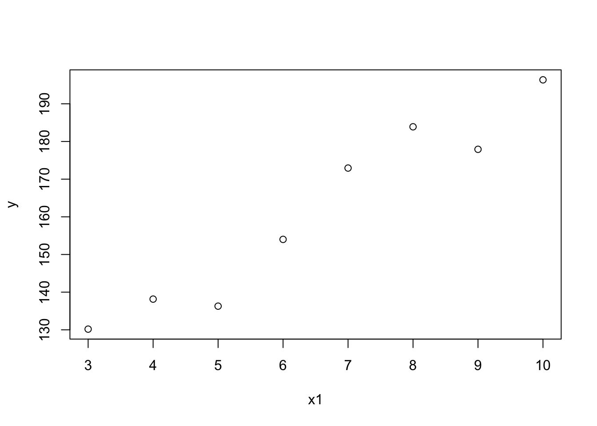

The F-test statistics compares two nested linear regression model. We can use it to test if a linear regression model fits the data significantly better compared to the null model. The t-test for a particular predictor or regressor is similar to F test of two models with and without that predictor. A question arises, if none of the predictor are significantly associated with the response, can we conclude that on the F-test we would likely to fail to reject the null hypothesis that \(H_0:\ \beta_j=0\) for all \(j\in \{1\dots p\}\). If so, what is the point of doing an F-test. In the following simulated example we will try to get some insight.
x1 = 3:10
x2 = rnorm(x1, x1, 0.1)
cor(x1,x2)## [1] 0.9992365We simulated to regressors x1 and x2 that are highly correlated.
set.seed(10)
y = 100 + rnorm(x1, 10*x1, 10)
plot(x1, y)
summary(lm(y~x1+x2))##
## Call:
## lm(formula = y ~ x1 + x2)
##
## Residuals:
## 1 2 3 4 5 6 7 8
## 2.3250 2.0785 -9.5507 -2.4940 7.2154 7.8622 -8.3871 0.9507
##
## Coefficients:
## Estimate Std. Error t value Pr(>|t|)
## (Intercept) 96.932 8.574 11.305 9.47e-05 ***
## x1 3.800 30.197 0.126 0.905
## x2 6.062 30.450 0.199 0.850
## ---
## Signif. codes: 0 '***' 0.001 '**' 0.01 '*' 0.05 '.' 0.1 ' ' 1
##
## Residual standard error: 7.646 on 5 degrees of freedom
## Multiple R-squared: 0.9326, Adjusted R-squared: 0.9056
## F-statistic: 34.57 on 2 and 5 DF, p-value: 0.001181The F-statistics p-value is small and so we conclude that the regression model is better than the null model that is we reject the null hypothesis that \(H_0:\ \beta_1=\beta_2=0\) in favor of the alternative that at least one of the predictors is associated with the response. The t-test concludes the opposite. According to the two t-tests, we fail to conclude that any of the predictor is associated with the response.
This is because the predictors are correlated and they hide association of one another. If we fit a linear regression with either of the two predictors we will see association.
summary(lm(y~x1))##
## Call:
## lm(formula = y ~ x1)
##
## Residuals:
## Min 1Q Median 3Q Max
## -10.223 -3.687 1.136 4.174 7.966
##
## Coefficients:
## Estimate Std. Error t value Pr(>|t|)
## (Intercept) 97.474 7.452 13.08 1.23e-05 ***
## x1 9.807 1.081 9.07 0.000101 ***
## ---
## Signif. codes: 0 '***' 0.001 '**' 0.01 '*' 0.05 '.' 0.1 ' ' 1
##
## Residual standard error: 7.007 on 6 degrees of freedom
## Multiple R-squared: 0.932, Adjusted R-squared: 0.9207
## F-statistic: 82.27 on 1 and 6 DF, p-value: 0.0001007summary(lm(y~x2))##
## Call:
## lm(formula = y ~ x2)
##
## Residuals:
## Min 1Q Median 3Q Max
## -9.135 -4.143 1.375 3.710 7.805
##
## Coefficients:
## Estimate Std. Error t value Pr(>|t|)
## (Intercept) 96.627 7.521 12.848 1.37e-05 ***
## x2 9.891 1.088 9.094 9.93e-05 ***
## ---
## Signif. codes: 0 '***' 0.001 '**' 0.01 '*' 0.05 '.' 0.1 ' ' 1
##
## Residual standard error: 6.991 on 6 degrees of freedom
## Multiple R-squared: 0.9324, Adjusted R-squared: 0.9211
## F-statistic: 82.69 on 1 and 6 DF, p-value: 9.931e-05